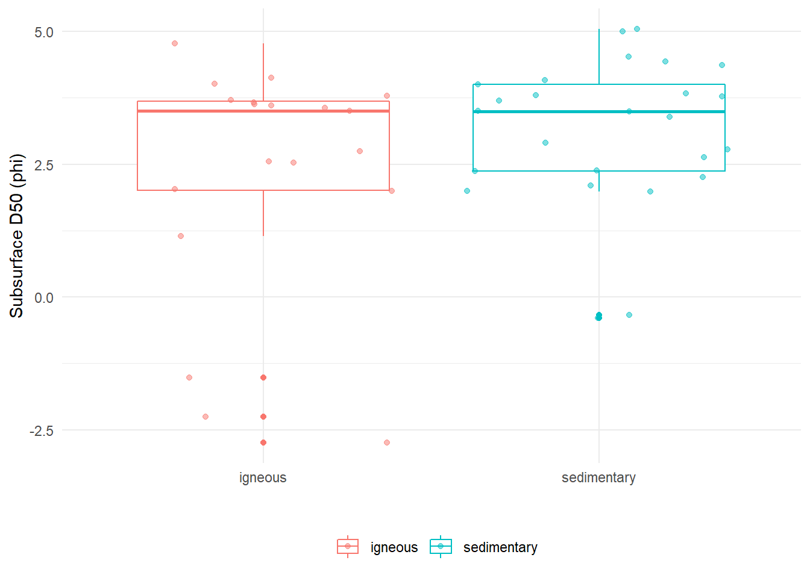

Chapter 4 Investigating Grain Size Variance
First, we will look at a boxplot of the distributions of the median grain size for all debris flow fans broken down by lithology.
Plotting boxplot of median grain size:
GSD %>%
filter(complete.cases(subD50),
(Lith_type == "igneous" | Lith_type == "sedimentary")) %>%
mutate(subD50_phi = log2(subD50)) %>%
relocate(subD50_phi, .after = subD50) %>%
ggplot(aes(x = Lith_type, y= subD50_phi, color = Lith_type))+
geom_boxplot() +
geom_jitter(alpha = 0.5) +
labs(y = "Subsurface D50 (phi)", x = "", color = "") +
theme_minimal() +
theme(legend.position = "bottom")
It is surpising that there is not much of a discernible difference in median grain size distributions between the sedimentary and igneous rocks.
Density plot of median grain size by lithology:
GSD %>%
filter(
(Lith_type == "igneous" | Lith_type == "sedimentary")) %>%
mutate(subD50_phi = log2(subD50),
surD50_phi = log2(surD50)) %>%
ggplot(aes(x = subD50_phi, y = Lith_type, fill = Lith_type)) +
geom_density_ridges(scale = 8) +
theme_minimal() +
labs(y = "", x = "D50") +
theme(legend.position = "none")
We can see that the igneous distribution is narrower than that of the sedimentary rocks.